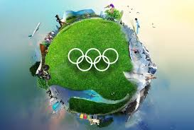

Solutions:



Pre-Olympics:
- Conduct through cost-benefit analysis
- Engage local communities in planning
- Develop sustainable infrastructure
- Create legacy plans for venues
- Establish transport budgeting
During Olympics:
- Implement efficient transportation systems
- Promote cultural exchange programs
- Foster community involvement
- Monitor and mitigate environmental impact
- Ensure safety and security
Post-Olympics:
- Convert venues into public spaces/li>
- Repurpose infrastructure for local needs
- Maintain upgraded infrastructure
- Encourage long-term tourism
- Evaluate and share best practices
Innovative solutions:
- Modular,temporary venues
- Sustainable building materials
- Green infrastructure(e.g.,parks,green roofs)
- Community-led legacy projects
- Digital engagement platforms
Best practices:
- Barcelona(1992):Integrated Olympic infrastructure into urban planning
- Vancouver(2010):Focused on sustainability and legacy
- London(2012):Prioritised community engagement and regeneration
- Rio(2016):Implemented modular,temporary venues
- Tokyo(2020):Emphasised innovation,sustainability,and community involvement
Conclusion:
By adopting these solutions,host cities can minimise the negative impacts and maximise the benefits of
hosting the Olympics,creating a lasting,positive legacy.